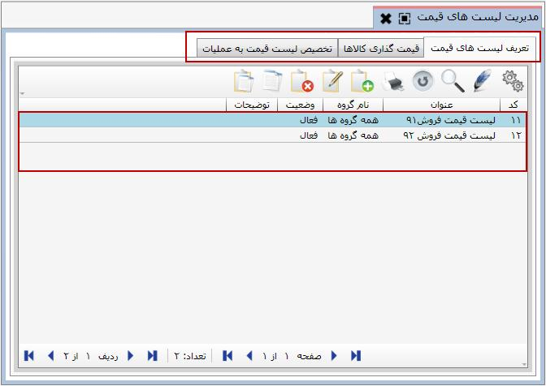
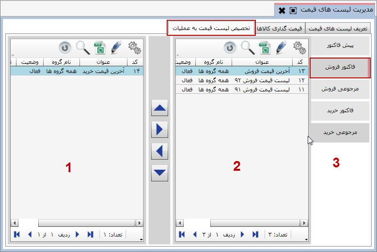

شما می توانید به تعداد دلخواه لیست قیمت تعریف کنید و به عملیات مربوط به آن اختصاص دهید، برای این کار از قسمت «گروه های اشخاص و لیست قیمت» روی منوی «مدیریت لیست های قیمت» کلیک کنید تا صفحه شکل زیر نمایان شود.
همان طور که مشاهده می کنید صفحه ظاهر شده دارای 3 تب «تعریف لیست های قیمت»، « قیمت گذاری کالاها» و «تخصیص لیست قیمت به عملیات» می باشد که به صورت پیش فرض هنگام ورود به این صفحه تب «تعریف لیست های قیمت» فعال می باشد که ابتدا به شرح این تب می پردازیم.
این تب شامل نام لیست های قیمت تعریف شده می باشد. برای اضافه کردن یک لیست قیمت جدید بر روی گزینه اضافه از نوار ابزار کلیک کنید تا فرم ایجاد لیست قیمت نمایان شود.

عنوان لیست قیمت را در فیلد عنوان تایپ کنید و از باکس کد گروه که شامل گروه های اشخاصی است که قبلا در سیستم تعریف کرده اید، کد گروه مناسب با لیست قیمت ایجادی را تعیین نمایید.
در فیلد فرمول می توانید برای لیست قیمت مورد نظرتان فرمول تعریف کنید. با انتخاب علامت ... در فیلد فرمول، پنجره مربوط به آن نمایش داده می شود.

در تصویر بالا سه تابع اولین، آخرین و میانگین که عموما برای فرمولدهی لیست قیمت استفاده می شوند.
تابع آخرین(LAST): آخرین قیمت ثبت شده را مشخص می کند.
تابع اولین(FIRST): اولین قیمت ثبت شده را نشان می دهد.
تابع (AVERAGE): میانگین قیمت های ثبت شده برای یک کالا را در فی کالا در سند خرید و فروش می دهد.
هر یک از این توابع سه پارامتر دریافت می کنند که از چپ به راست به شرح زیر است:
پارامتر اول: توابع گفته شده کد عملیات را به عنوان پارامتر اول دریافت می کنند.
پارامتر دوم: این پارامتر دوره مالی را برای توابع مشخص می کند. در صورتی که مقدار این پارامتر 0 باشد، تابع مورد نظر برای همه دوره های مالی و در صورت داشتن مقدار 1، تابع انتخاب شده در دوره مالی جاری نرم افزار عمل خواهد کرد
پارامتر سوم: با استفاده از این پارامتر می توانید تعیین کنید خروجی توابع انتخاب شده وابسته به شخص سند خرید و فروش باشد. برای مثال می توانید آخرین قیمت فروش ثبت شده برای یک شخص خاص را داشته باشید. اگر مقدار پارامتر 0 باشد، تابع برای همه اشخاص و اگر مقدار آن 1 باشد، تابع برای شخص انتخاب شده در سند خرید و فروش عمل خواهد کرد.
سپس وضعیت را در حالت فعال قرار دهید و نهایتا با تایید کردن لیست قیمت ثبت می شود.
بعد از تعریف عنوان لیست قیمت در این قسمت باید کالا ها را با قیمت مورد نظر به این لیست قیمت اختصاص دهید. برای اینکار باید تب «قیمت گذاری کالاها» را انتخاب نمایید

در شکل بالا در قسمت 1 لیست قیمت هایی که در تب «تعریف لیست قیمت» تعریف کرده اید نمایش داده می شود که در شکل بالا «لیست قیمت فروش 92» در حالت انتخاب قرار دارد. در قسمت شماره 2 کالاهای قیمت گذاری شده و اختصاص یافته به هر یک از لیست های قیمت و در قسمت 3 کالاهای قیمت گذاری نشده قرار دارند. با انتخاب یک لیست قیمت از قسمت 1 می توانید کالاهای مربوط به آن را از قسمت 3 انتخاب کنید، حال با زدن کلید
 پنجره زیر ظاهر می شود:
پنجره زیر ظاهر می شود:

پس از وارد کردن قیمت و زدن تایید کالای شما قیمت گذاری شده و به جدول سمت راست منتقل می شود.
برای خارج کردن یک کالا از لیست قیمت انتخابی کافی است که کالای مورد نظر را از ستون شماره 2 انتخاب کنید و بر روی کلید
 کلیک کنید، پنجره ای که اطمینان شما را از این اقدام سوال می کند نمایان می شود. با کلیک بر روی بله کالای مورد نظر از لیست حذف می شود.
کلیک کنید، پنجره ای که اطمینان شما را از این اقدام سوال می کند نمایان می شود. با کلیک بر روی بله کالای مورد نظر از لیست حذف می شود.

ویرایش قیمت: اگر نیاز داشتید قیمت کالایی را تغییر دهید از جدول شماره 2 کالای مورد نظرتان را انتخاب کنید و روی گزینه ویرایش قیمت کلیک کنید، در آن صورت دوباره پنجره محاوره ثبت قیمت که در صفحه قبل گفته شد نمایان می شود و می توانید قیمت کالا را تغییر دهید.

تغییر قیمت: چنانچه بخواهید به قیمت یک کالا درصد یا مقدار ثابتی اضافه یا از آن کم کنید کافی است کالای مورد نظر را از لیست شماره 2 انتخاب کرده و روی گزینه تغییر قیمت کلیک کنید. با انتخاب آن پنجره محاوره ای زیر نمایش داده می شود

توضیحات مربوط به هر یک از فیلد های شکل بالا به این شرح است:

با انتخاب هر یک از گزینه های موجود در کشوی مقابل فیلد نوع تغییر می توانید روش تغییر قیمت را بر اساس افزایش یا کاهش قیمت تعیین کنید.

با استفاده از این فیلد نیز می توانید روش تغییر قیمت را بر اساس درصد یا مبلغ ثابت تعیین نمایید.
در فیلد مقدار نیز باید مقدار مورد نظرتان را بر اساس مقداری که در فیلد روش تغییر انتخاب کرده اید وارد کنید. برای مثال اگر در فیلد روش تغییر، درصد را انتخاب کنید باید در فیلد مقدار، درصد تغییر قیمت و اگر در فیلد روش تغییر، مبلغ ثابت را انتخاب نمایید باید در فیلد مقدار مبلغ ثابتی را برای افزایش یا کاهش قیمت انتخاب کنید.
بعد از پر کردن فیلدهای سوال شده و تایید کردن آن تغییرات مورد نظر اعمال می شود.
در فرم صدور سند خرید و فروش وقتی یک کالا انتخاب می شود سیستم قیمت آن کالا را از لیست قیمتی جستجو می کند که مربوط به عملیات انتخابی باشد. بنابراین بعد از تعریف لیست قیمت و قیمت گذاری کالاها باید مشخص کنید که در هر یک از عملیات خرید و فروش از کدام لیست قیمت استفاده شود (مثلا در عملیات خرید از یک لیست قیمت استفاده می شود و در عملیات فروش از یک لیست قیمت دیگر). برای این کار باید به تب «تخصیص لیست قیمت به عملیات» بروید

همان طور که در شکل مشاهده می کنید تب تخصیص لیست قیمت به عملیات نیز به سه بخش تقسیم شده است. در قسمت 1 لیست عملیات خرید و فروش تعریف شده در سیستم، در قسمت 2 لیست قیمت هایی قرار دارد که به عملیات انتخابی اختصاص داده شده است و در قسمت شماره 3 لیست قیمت هایی که به عملیات انتخابی در قسمت 1 تخصیص داده نشده اند قرار دارد. در شکل بالا عملیات فاکتور فروش انتخاب شده است که دو لیست قیمت فروش 91 و 92 و آخرین لیست قیمت فروش به آن اختصاص داده شده است. همانند آن چه در قسمت های قبل گفته شد در این صفحه نیز برای تخصیص یا عدم تخصیص لیست های قیمت به عملیات از دو کلید
 استفاده نمایید. همچنین با استفاده از گزینه های
استفاده نمایید. همچنین با استفاده از گزینه های
 و
و
 می توانید اولویت لیست های قیمت تخصیص یافته را تعیین نمایید، اولین لیست قیمت در جدول شماره 2 از شکل بالا، لیست قیمت پیش فرض برای عملیات انتخاب شده خواهد بود. به همین ترتیب می توانید برای عملیات خرید نیز لیست قیمت مخصوص به آن را انتخاب نمایید.
می توانید اولویت لیست های قیمت تخصیص یافته را تعیین نمایید، اولین لیست قیمت در جدول شماره 2 از شکل بالا، لیست قیمت پیش فرض برای عملیات انتخاب شده خواهد بود. به همین ترتیب می توانید برای عملیات خرید نیز لیست قیمت مخصوص به آن را انتخاب نمایید.